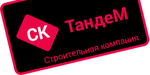

<!DOCTYPE html>
<html>

<head>
	<title>СК ТандеМ | Главная страница</title>
	<link href="css/style.css" rel="stylesheet">
	<link href='https://fonts.googleapis.com/css?family=Roboto' rel='stylesheet' type='text/css'>
	<meta charset="utf-8">
</head>
<script>
	jsHover = function() {
		var hEls = document.getElementById("menu").getElementsByTagName("li");
		for (var i = 0, len = hEls.length; i < len; i++) {
			hEls[i].onmouseover = function() {
				this.className += " jshover";
			}
			hEls[i].onmouseout = function() {
				this.className = this.className.replace(" jshover", "");
			}
		}
	}
	if (window.attachEvent && navigator.userAgent.indexOf("Opera") == -1) window.attachEvent("onload", jsHover);
</script>

<body>
	<div class="page">
			<div class="top-menu">
			<div class="logo">
				<a href="index.html"></a>
			</div>
			<ul class="menu">
				<li class="menuactive"><a href="index.html">ГЛАВНАЯ</a></li>
				<li><a href="about.html">О ПРЕДПРИЯТИИ</a></li>
				<li><a href="archive.html">АРХИВ ДОКУМЕНТОВ</a>
				</li>
				<li><a href="gallery.html">ГАЛЕРЕЯ ОБЪЕКТОВ</a></li>
				<li class="menuimg"><a href="mailto: tandem45@inbox.ru">ОБРАТНАЯ СВЯЗЬ</a></li>
			</ul>
		</div>
		<div class="textabout">
		<h3>ООО «СК ТандеМ»	</h4>
<p>
Строительная компания ООО "СК ТандеМ" открыто в феврале 2015 г. Основной профиль работ, строительство, реконструкция и текущий ремонт зданий. ООО "СК ТандеМ" имеет допуск к работам имеющим влияние на безопасность объектов капитального строительства и входит в СРО Некоммерческое партнерство 
"Строительный Альянс Монолит" г. Москва. Кадровый состав предприятия укомплектован специалистами с профессиональным стажем более 10 лет. Руководящий инженерный состав имеют именные сертификаты соответствия аудитора Евразийской системы сертификации. По банковской статистике оборота средств "СК ТандеМ" является предприятием положительной доходности. Предприятие работает на территории г. Кургана и Курганской области, как с частными заказчиками, так и с организациями. Одним  из постоянных заказчиков является крупнейший Российский рителлер АО "Тандер" г. Краснодар. Основные цели работы предприятия это повышение профессионализма сотрудников, расширение географии объектов, повышение уровня доходности.</p>
	</div>
	</div>
	
	<div class="footer">
		<h4>тел. 8(912) 837-08-29145</h2>
		<p>ООО "СК ТандеМ"</p>
	</div>

</body>

</html>